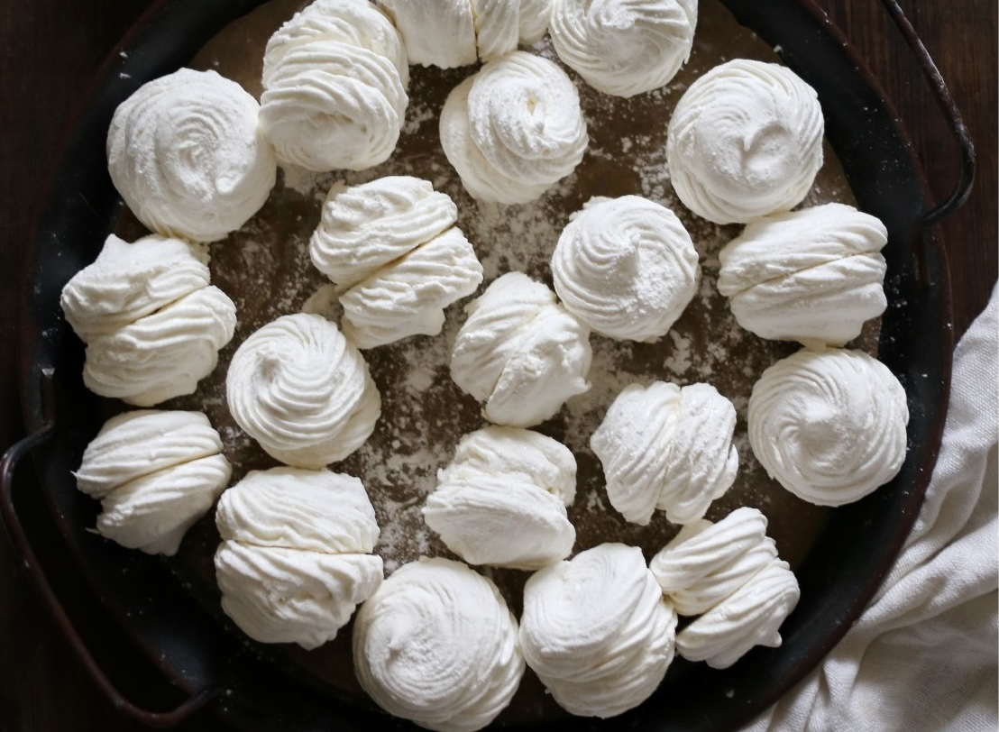

Зефир готовится молниеносно и стремительно. Особенно если яблочное пюре приготовить заранее. От момента, когда надо отмерить и подготовить все ингредиенты, достать кондитерский мешок и выстелить пару-тройку противней бумагой для выпечки, до момента отсадки зефира пройдет минут 10–15. Затем, конечно, нужно будет время, чтобы зефир стабилизировался и застыл, но усилий потребуется не так много.
Поскольку взбивание яблочного пюре и белков и приготовление сиропа с агар-агаром происходит одновременно, очень рекомендую использовать планетарный миксер. И пока тот взбивает, вы можете помешивать сироп и следить за его температурой.
Конечно, есть много нюансов приготовления зефира. Начиная от выбора яблок для пюре и агар-агара. Лучше взять кислые сорта — антоновку или Гренни Смит. Яблочное пюре можно приготовить несколькими способами. На плите: выложить ломтики яблок в кастрюлю, влить немного воды, уварить их до мягкости, протереть через сито и выпарить пюре до густого состояния.
Можно приготовить в микроволновке: очищенные половинки поставить на 7–8 минут на полную мощность. Этот метод неплох, так как влага испаряется и пюре получится густым. Также яблоки можно запечь в духовке, именно этот метод описывается в рецепте.
Агар для зефира лучше покупать в профессиональных магазинах товаров для выпечки. Если берете агар в супермаркете, внимательно читайте состав, там не должно быть никаких лишних добавок. Не используйте для этого рецепта агар марки Kotanyi, с ним ничего не получится.
Кондитерский мешок для зефира лучше брать размера L или побольше. Насадка — открытая или закрытая звезда с диаметром отверстия 1–1,5 см. Бумагу для отсадки рекомендую взять качественную, а лучше с силиконовой пропиткой, чтобы зефир легко потом можно было с нее снять. Можно использовать силиконовый кондитерский коврик.
Зефир готовят как просто с сахаром, так и с частичной его заменой глюкозным сиропом. Его добавляют, чтобы зефирная масса была более нежной и воздушной, а также чтобы увеличить время хранения и избежать кристаллизации сахара. Но если глюкозный сироп не найдете, просто используйте такое же количество сахара при добавлении к агару. И постоянно помешивайте сироп в процессе приготовления.
Для приготовления сиропа очень рекомендуется кулинарный термометр. Когда температура достигнет 110 °С, важно тонкой струйкой влить сироп, стараясь не попадать на лопасть миксера, в уже взбитую до состояния плотных пиков белковую массу с пюре.
И сразу же после взбивания отсадить зефир. Получится довольно много, около 40 кругов диаметром 5–6 см, которые затем можно соединить, получив 20 воздушных круглых зефирок.
Что касается влажности помещения, в котором будете готовить и оставлять зефир для стабилизации, то она должна быть около 50% или ниже. Если влажность высокая, поможет кондиционер.
Готовый и стабилизированный зефир нужно обвалять в смеси сахарной пудры и кукурузного крахмала. Хранить в герметичном контейнере в холодильнике.